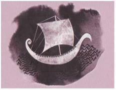

Yerdeniz III
"En Uzak Sahil ölüm hakkında. Onun diğerlerinden daha zayıf kurgulu, daha tutarsız ve eksik olması da bu yüzden. İlk iki kitap yaşadığım ve aldattığım şeyler hakkındaydı. En Uzak Sahilde konu edilen şeyi ise yaşayıp aldatamazsınız. Bu bana genç okurlar için çok uygun bir konu gibi gelmişti, çünkü çocukyalnızca ölümün var olduğunu değil çocuklar ölümün yoğun bir biçimde farkındadırlar kendisinin de ölümlü olduğunu, öleceğini anladığı anda, çocukluk biter ve yeni hayat başlar. Bu da büyümedir, ama daha geniş bir bağlamda."
Ursula K. Le Guin
Metis Edebiyat | Roman
http://eskikitaplarim.com
Düzenleme: Tyrion